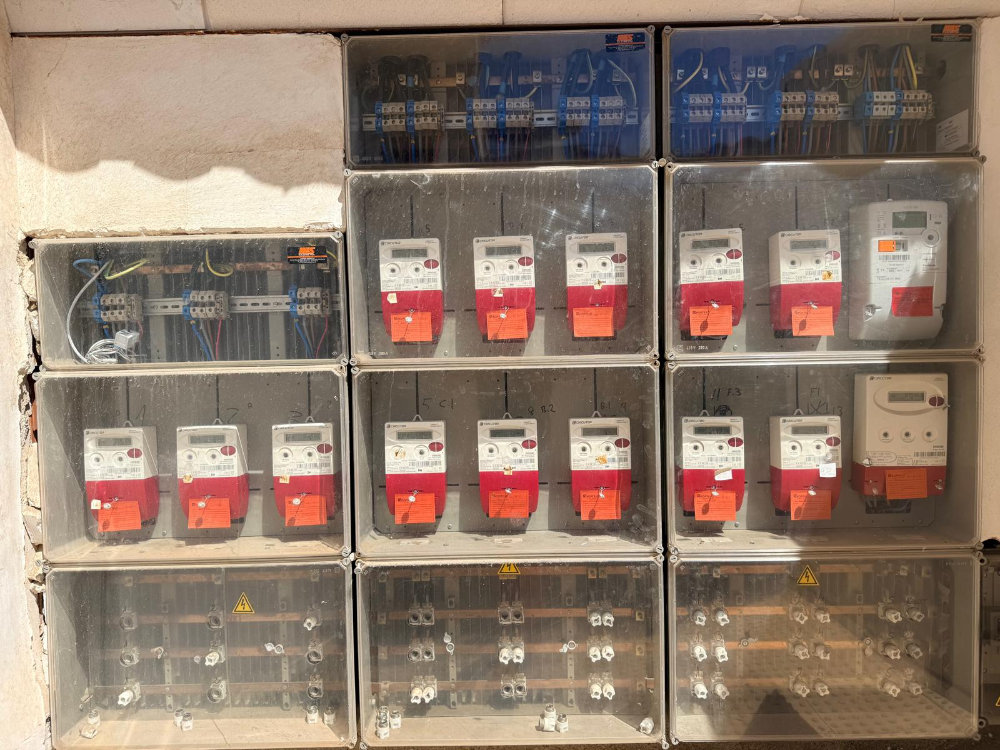
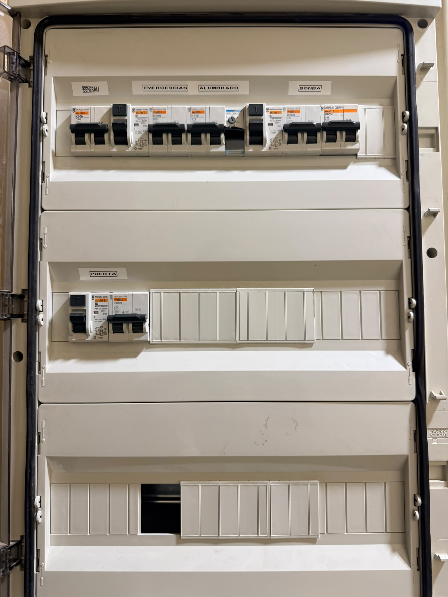
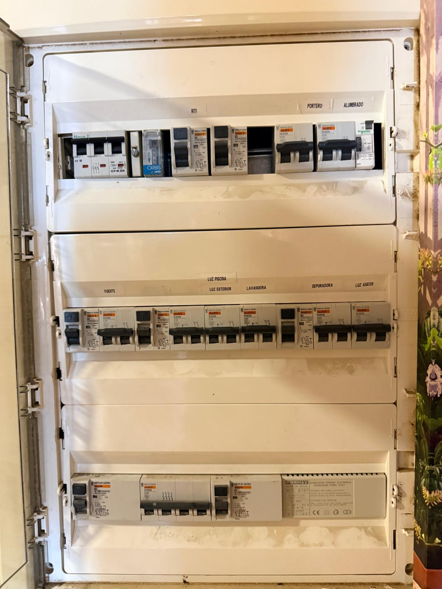
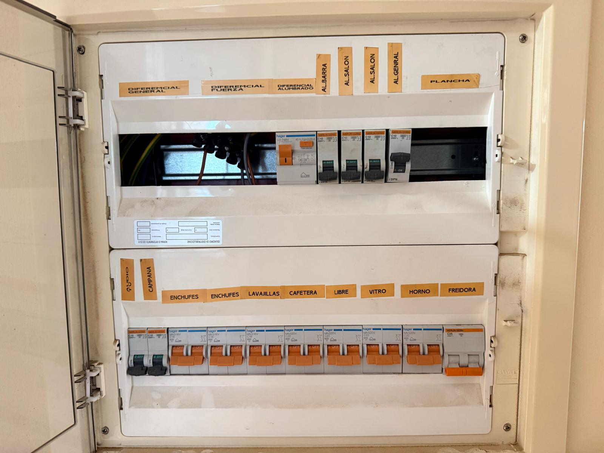

Electricity
Information about electrical infrastructure, meters, breakers, and provider details.
Provider Details
- Company: Montajes Eléctricos Portillo S.A. / Distribuciones Eléctricas Portillo (CHC Energía)
- Local Office: Avda. Blas Infante, 4, 04617 Palomares (Cuevas del Almanzora, Almería)
- Phone: +34 950 61 80 35
- Support / Freephone: 900 373 272
- Email: info@portillosa.com / chcenergia@portillosa.com
- Official Website: portillosa.com
Main Electrical Cabinet & Smart Meters
Location: Outdoor, located at the entrance to the underground car park on the right-hand side.

Main outdoor electrical cabinet containing the utility meters.
- Meter Technology & Reading: All installed electricity meters are digital smart meters (standardized utility models equipped with an LCD display and optical interface) featuring automated remote readout and smart grid telemetry. This allows Portillo to continuously record consumption data remotely without requiring manual, on-site meter readings.
Garage Electrical Panel & Swimming Pool Pumps
Location: Underground car park (basement level -1), in the corridor leading to the lift.

Garage electrical panel (Gate, Alumbrado, C10 & C25 pool pumps) in the car park corridor next to the lift.
This control box governs multiple communal garage and pool systems:
- Garage Entrance Gate (Puerta): Circuit controlling the motorized vehicle access gate at the front of the garage.
- Garage Lighting (Alumbrado): Circuit supplying the illumination for the underground car park spaces and corridors.
- Fuse C25 (Filter Pump): Dedicated circuit for the main pool filtration pump, which handles the highest electricity consumption.
- Fuse C10 (Water Jets): Dedicated circuit for the secondary water jet pump, operating with a lower electricity consumption.
First Floor Electrical Panel A
Location: Hidden behind the large poster on the wall directly in front of the entry door. Remove the poster to access the box.
Panel Scope: Common Indoor Services, Telecommunications, Lighting & Pool/Utility Controls.

First floor electrical panel A.
Top Row Circuit Breakdown:
- Telecommunications Infrastructure (RITI): Telecommunications infrastructure power supply (ICT / Registro de Infraestructuras de Telecomunicacion). Powers the building's central telecom and TV distribution amplifiers.
- Intercom System (Portero): Intercom system power supply. Feeds the Fermax electronic door keeper power supply unit located directly on the right side of the bottom row.
- Lighting (Alumbrado): Common area lighting circuit for the internal hallways and stairwells on this floor.
Middle Row Circuit Breakdown:
- Fountain (Fuente): Fountain circuit (pool water feature or decorative fountain pump).
- Pool & Exterior Lighting (Luz Piscina / Luz Exterior): Pool lighting and outdoor perimeter lighting circuits.
- Laundry Area (Lavanderia): Laundry area circuit (supplying washing machine or communal utility outlets).
- Filtration Plant (Depuradora): Pool filtration plant / pump control circuit.
- Restroom Lighting (Luz Aseos): Toilets/bathrooms lighting circuit for communal or service washrooms.
Bottom Row Components:
- Elevator (Ascensor): Elevator / lift power supply circuit (labeled on the lower frame).
- Intercom Power Supply (Fermax 8787): Electronic door keeper power supply unit (Alimentador Portero Electronico) providing low-voltage DC power for the building's intercom and door-release system.
First Floor Electrical Panel B
Location: First floor, located on the left-hand wall between the main entrance door and the door leading to the swimming pool.
Panel Scope: Apartment or Main Utility Power Distribution (General Protection, Lighting, Common/Salon Circuits, Kitchen Appliances, and Heavy-Load Equipment).

First floor electrical panel B.
Top Row Circuit Breakdown (Protection & Lighting / Salón):
- General Differential / Power Differential / Lighting Differential (Diferencial General / Diferencial Fuerza / Diferencial Alumbrado): Main residual current circuit breakers (RCDs) providing earth-leakage protection for general lines, power outlets, and lighting circuits.
- Bar Lighting / Lounge Lighting (Al. Barra / Al. Salon): Lighting circuits for the main lounge/living area.
- General Lighting (Al. General): General lighting circuit.
- Iron / Utility (Plancha): Dedicated circuit for an iron or heavy utility appliance.
Bottom Row Circuit Breakdown (Appliances & Heavy Loads):
- Audio & Extractor Hood (Audio / Campana): Audio systems and kitchen extractor hood circuits.
- Power Outlets (Enchufes): General power outlet circuits (multiple standard socket lines).
- Dishwasher (Lavajillas): Dedicated circuit for the dishwasher.
- Coffee Machine (Cafetera): Dedicated circuit for the coffee machine or kitchen utility outlets.
- Spare / Free (Libre): Spare/available circuit breaker.
- Ceramic Hob (Vitro): Dedicated high-load circuit for the ceramic/induction hob (cooktop).
- Oven (Horno): Dedicated high-load circuit for the oven.
- Deep Fryer (Freidora): Dedicated high-load circuit for a deep fryer or auxiliary heavy kitchen appliance.